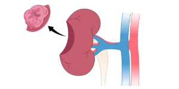

عملية استئصال الكلية الجزئي
مقدمة عن عملية استئصال الكلية الجزئي
استئصال الكلية الجزئي هو نوع من جراحة استئصال الكلى يقوم فيها جراح الكلى والمسالك البولية بإزالة جزء من الكلية لعلاج مرض أو إصابة. بمجرد أن يقوم الجراح بتصحيح الحالة، سيقوم بإعادة بناء الكلية بحيث يتم الإبقاء عليها.
الهدف الذي يسعى إليه جراح الكلى والمسالك البوليه أثناء استئصال الكلية الجزئي هو إزالة الجزء المصاب أو التالف من الكلية مع ترك أكبر قدر ممكن من أنسجة الكلى السليمة. يعد الحفاظ على وظائف الكلى أمرًا مهمًا لأن الكلى هي المرشحات الرئيسية لجسمك، وهي ضرورية للحياة. يساعد وجود كليتين عاملتين على تحسين وظائف الكلى بشكل عام.
دواعي عملية اسئصال الكلية بشكل جزئي
ما هي دواعي استئصال الكلية الجزئي، سواءاً استئصال جزء واحد من الكلية أو استئصال أكثر من جزء، وأحياناً الإستئصال النصفي للكلية أي ازالة ما يقرب من نصف الكلية؟
- السبب الأكثر شيوعاً لاستئصال الكلية الجزئي هو ورم صغير الحجم في الكلية، أي سرطان الكلى.
- التهابات الكلية، وليس غريباً حيث أن بعض أنواع الإلتهابات تتسبب في حدوث منطقة على شكل كتلة تشبه السرطان أو تتسبب في تكوين منطقة كيسية ملتهبة. وفي هذه الحالات من الأفضل القيام بازالة هذا الجزء الملتهب من الكلية.
- حصى الكلى، تتسبب حصى الكلى بالعديد من المشاكل في الكلى؛ منها أن تتسبب في انسداد لجزء من الكلية مما يؤدي ضمور هذا الجزء الكلوي فقط، وفي حال وجود أعراض او مشاكل من هذا الجزء من الكلية فقد يكون الحل الأفضل هو استئصال الكلية الجزئي.
- في الإصابات والحوادث؛ حيث قد يلزم السيطرة على النزيف من الكلى في حال الإصابات، واذا كانت هنالك اصابة في منطقة محددة من الكلية مع نزيف شديد فإن الحل الأفضل هو الازالة الجزئية للكلية وليس استئصال الكلية بالكامل.
مواضيع ذات صلة:
حصى الكلى / سرطان الكلية / استئصال الكليةطرق استئصال الكلية الجزئي - Partial Nephrectomy
الجراحة المفتوحة أو الجراحة بالمنظار عن طريق ثقوب صغيرة: تشبه عمليات استئصال الكلية الجزئي نظيراتها في استئصال الكلية الكلي. حيث يمكن إزالة جزء من الكلية إما باستخدام عملية "مفتوحة" أو باستخدام تقنية ثقب المفتاح - المعروفة باسم تقنية المنظار.
- تستخدم الجراحة المفتوحة جرحاً على جانب البطن يتم من خلاله إزالة جزء من الكلية المطلوبة ثم ترك باقي أنسجة الكلية الصالحة في مكانها. و تستخدم طريقة الجرح المفتوح حالياً في الحالات المعقدة أو لأنها أقل كلفةً من جراحات الكلية بالمنظار الجراحي.
- أما في استئصال الكلية الجزئي باستخدام المنظار البطني، تتم الإزالة من خلال ثلاث أو أربع جروح يبلغ طول كل منها 1 سم. ثم يتم إدخال منظار البطن (أنبوب رفيع مزود بضوء وكاميرا في نهايته) من خلال القطع. ترسل الكاميرا الصور إلى شاشة التلفزيون حتى يتمكن الجراح من رؤية الكلى والأنسجة المحيطة بها. ثم يتم ايجاد وتحديد المنطقة المطلوب ازالتها بشكل جزئي من الكلية. وبعد الازالة يتم ترميم مكان هذا الإستئصال الجزئي في الكلية والإبقاء على باقي الأنسجة الكلوية السليمة في مكانها.
- كما وبالإمكان استئصال الكلية عن طريق المنظار من الجنب، وليس المنظار البطني، حيث يتم ازالة الجزء الكلوي عن طريق ثقوب صغيرة في الجنب والدخول بالمنظار الى الكلية مباشرة. وهذه الطريقة تسمح بتجنب الأعضاء داخل البطن مثل القولون والمعدة والأمعاء. ولهذه الطريقة أفضلية في التعافي و نسب أقل للمضاعفات. كما وتكون عملية استئصال الكلية الجزئي الأفضل اذا كان ورم الكلية أو الجزء المراد استئصالة يقع في الجهة الخلفية من الكلية؛ حيث أن المنظار الجراحي من الجنب يمكن من الوصول الى الجهة الخلفية للكلية بشكل أفضل من المنظار الجراحي البطني للكلية. و هذا يعني أيضاً أن عملية المنظار الجراحي للكلية عن طريق البطن تكون الأفضل في أورام الكلية الأمامية. لكن يبقى التفضيل بين هاتين العمليتين منوطاً باستشاري جراحة الكلى والمسالك البولية حيث يعتمد الخيار بينهما على عدة عوامل أخرى مثل الأمراض المزمنة والسمنة المفرطة وغيرها.
ما هي المخاطر والآثار الجانبية لعمليات الاستئصال الجزئي للكلى؟
يتم إجراء عملية استئصال الكلية الجزئي تحت التخدير العام، وتستغرق عملية إزالة جزء من الكلية من ساعتين الى أربع ساعات. وكما هو الحال مع أي عملية أو أي تخدير يحتمل حدوث مضاعفات.
- آلام في طرف الكتف وانتفاخ البطن - يحدث هذا بسبب إدخال الغاز لنفخ تجويف البطن أثناء الجراحة بالمنظار لتسهيل رؤية الأعضاء داخل تجويف البطن. لا تحدث هذه المشكلة في عمليات الكلى من الجنب. اذا حدثت عادة ما تكون مسكنات الألم الخفيفة كافية للسيطرة على الألم.
- إذا أجريت لك عملية جراحية مفتوحة، فمن المرجح أن تعاني من المزيد من الألم، لذا ربما تحتاج إلى مسكنات أقوى. قد يناقش طبيب التخدير معك خيارات المسكنات المختلفة.
- في بعض الأحيان، قد يحدث عدوى أو فتق أو نزيف في واحد أو أكثر من الجروح التي يتم إجراؤها باستخدام جراحة المنظار أو في الجرح في حال إجراء استئصال الكلية بالجرح المفتوح. وسوف تتطلب هذه الحالة علاجًا إضافيًا.
- في حالات نادرة، قد يحدث نزيف أثناء الجراحة باستخدام المنظار، مما يضطر الجراح إلى اللجوء إلى الجراحة المفتوحة.
- نادرًا ما يحدث إصابة في التجويف المحيط بالرئة أثناء الجراحة. ويمكن إصلاح ذلك دون الحاجة إلى أي جروح إضافية.
- في حالات نادرة جدًا، قد تحدث إصابة للأعضاء المحيطة أو الأوعية الدموية أثناء الجراحة بالمنظار مما يتطلب تحويلها إلى جراحة مفتوحة. ويمكن تجنب اصابة بعض الأعضاء المحيطة مثل القولون عن طريق اجراء عملية استئصال الكلية من الجنب بالمنظار.
- قد تكون هناك حاجة لإزالة الكلية بأكملها إذا لم يكن من الممكن إزالة الكلية جزئيًا داخل العملية.
متى يتم الخروج من المستشفى بعد عملية استئصال الكلية؟
نتوقع أن تبقى في المستشفى لمدة تتراوح بين يومين الى ثلاثة أيام بعد العملية. قبل أن تعود إلى المنزل، سيتم السيطرة على الألم بشكل جيد من خلال تناول المسكنات في الفم او في الوريد ان لزم الأمر. قبل الخروج سيتم تزويدك بكمية كافية من مسكن الألم. يجب أن تأكل وتشرب ويجب أن تعود إلى مستوى حركة جيد وكافي لقضاء الإحتياجات اليومية قبل الخروج من المستشفى.
كما ويجب مراجعة استشاري الكلى والمسالك البولية حسب الإرشادات التي يتم شرحها لك قبل الخروج
خلال فترة التعافي بعد عملية استئصال الكلية الجزئي
سيكون لديك موعد للحضور إلى عيادة جراحة الكلى والمسالك البولية في المستشفى لمناقشة أي نتائج من الاختبارات على الكلى التي قد أجريناها، وكذلك للتأكد من أنك تتعافى بشكل جيد.
ما يجب الإنتباه له خلال فترة التعافي في البيت:-
- إذا كانت الجروح حمراء وساخنة عند لمسها أو تتسرب منها السوائل أو مؤلمة للغاية، يرجى زيارة استشاري المسالك البولية أو الاتصال بعيادة جراحة المسالك البولية الخاصة بك لأن هذه علامات على وجود عدوى في الجرح وقد تحتاج إلى علاج عاجل بالمضادات الحيوية.
- بمجرد أن تبدأ في التبول بشكل طبيعي، إذا كنت تعاني من إحساس بالحرقان أو الوخز أو تلاحظ رائحة كريهة، فسوف تحتاج إلى زيارة أخصائي أمراض المسالك البولية لأن هذه غالبًا ما تكون علامات على وجود عدوى في البول وقد تحتاج إلى علاج بالمضادات الحيوية.
- من المستحسن تجنب رفع الأشياء الثقيلة والقيادة لمدة 2-4 أسابيع بعد العملية، لأن أي زيادة مفاجئة في الضغط في البطن يمكن أن تسبب الألم في الجروح. وقد تتسبب في حدوث فتق في الجروح أيضاً.
- يجب زيادة التمارين الرياضية تدريجيًا. ابدأ بالمشي لمسافات قصيرة وممارسة التمارين الخفيفة. تناول نظامًا غذائيًا صحيًا يحتوي على الكثير من السوائل. تعد الفواكه والخضروات الطازجة مهمة للحفاظ على انتظام حركة الأمعاء.
- يمكنك العودة إلى العمل عندما تشعر باللياقة البدنية، وهذا يتوقف على طبيعة عملك. وعادة ما تكون هناك حاجة إلى إجازة من العمل لمدة 2-4 أسابيع بعد الخروج من المستشفى.
ملخص عملية الاستئصال الجزئي الكلية
يتم اللجوء إلى إزالة جزء من الكلية في العديد من الحالات المرضية التي عادة ما تحتمل خطورة في حال تم تركها مثل أورام الكلى أو التهابات الكلى الخطيرة. تختلف أنواع عمليات استئصال الكلية الجزئي بين الجراحة المفتوحة والجراحة بالمنظار، بما في ذلك استئصال الكلية الجزئي من الجنب لتقليل المضاعفات وتسريع فترة التعافي.
تعتبر عمليات استئصال الكلية طفيفة التوغل الخيار الأمثل للعديد من المرضى بسبب انخفاض معدلات الألم والمضاعفات وقصر فترة البقاء في المستشفى مقارنة بالجراحة المفتوحة. وقد أثبتت الدراسات أن طرق المنظار من الجنب تحافظ على الأنسجة المحيطة وتقلل من خطر الإصابة بالأعضاء الداخلية الموجودة في تجويف البطن.
خلال فترة التعافي، من الضروري اتباع إرشادات دكتور الكلى والمسالك بعناية لضمان الشفاء السريع وتجنب أي مضاعفات محتملة. يمكن لمعظم المرضى استئناف الأنشطة اليومية بشكل تدريجي، مع الحفاظ على النظام الغذائي الصحي والمراجعات الطبية المنتظمة.
تعد عملية استئصال الكلية الجزئي إجراءً آمنًا وفعالًا إذا ما أجريت بيد فريق طبي متخصص. من المهم استشارة طبيب مسالك بولية مختص قبل اتخاذ القرار لإجراء العملية لضمان تقييم شامل للحالة واختيار الطريقة الأنسب بناءً على الحالة الصحية الفردية.
مراجع عملية استئصال الكلية الجزئي
- Touijer, K., Jacqmin, D., Kavoussi, L. R., Montorsi, F., Patard, J. J., Rogers, C. G., ... & Van Poppel, H. (2010). The expanding role of partial nephrectomy: a critical analysis of indications, results, and complications. European urology, 57(2), 214-222.
- Leslie, S., Goh, A. C., & Gill, I. S. (2013). Partial nephrectomy—contemporary indications, techniques and outcomes. Nature Reviews Urology, 10(5), 275-283.
- Haber, G. P., & Gill, I. S. (2006). Laparoscopic partial nephrectomy: contemporary technique and outcomes. European urology, 49(4), 660-665.
- Huang, W. C., Elkin, E. B., Levey, A. S., Jang, T. L., & Russo, P. (2009). Partial nephrectomy versus radical nephrectomy in patients with small renal tumors—is there a difference in mortality and cardiovascular outcomes?. The Journal of urology, 181(1), 55-62.
- Lane, B. R., & Gill, I. S. (2007). 5-Year outcomes of laparoscopic partial nephrectomy. The Journal of urology, 177(1), 70-74.